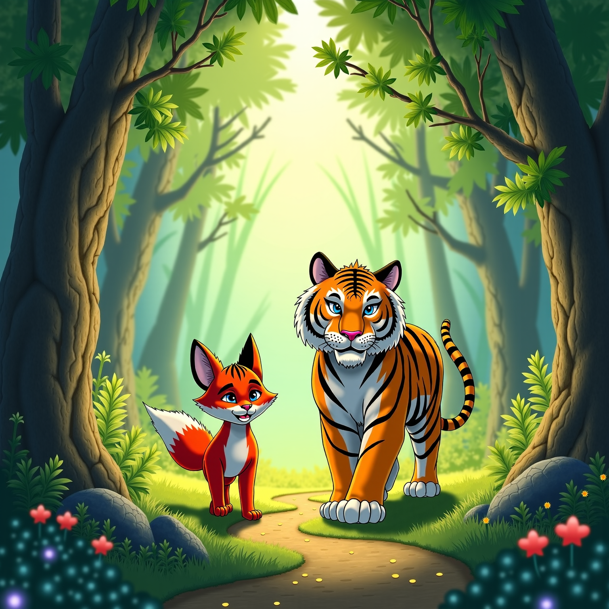

狐假虎威①
①狐假虎威：是一个汉语成语，原义是狐狸假借老虎的威势吓唬百兽，后比喻仰仗或倚仗别人的权势来欺压、恐吓人。出自《战国策·楚策一》。
你知道怎样用人工智能生成一幅精美的图片吗？你还不知道怎样输入提示词让人工智能更加聪明吗？这个网页将解决您的烦恼，为您展示怎样运用不同的人工智能得到想要的文生图片
使用工具：LIBLIB，扣子
-
第一步
想好你想要生成的文本，这里以一个成语为例——“狐假虎威”。
-
第二步
在“扣子”上的事件画面描述词生成器上，输入“狐假虎威”，会有对这个词语的画面描述。在这里，画面描述为：
-
- 人物：
- 一只狡黠的狐狸，它身形小巧，毛色火红，眼睛灵动，嘴角微微上扬，露出得意的表情。
- 一只威猛的老虎，体型巨大，毛色金黄，眼神威严，张着血盆大口，露出锋利的牙齿。
-
- 地点：
- 一片茂密的森林，古木参天，绿草如茵，野花点缀其中。有一条蜿蜒的小路穿过森林，路边有一些灌木丛和石头。
-
- 动作：
- 狐狸昂首挺胸走在老虎前面，步伐轻快，尾巴高高翘起。
- 老虎跟在狐狸后面，表情有些疑惑，脚步略显迟疑。
-
- 物品：
- 森林中的树木、花草、石头等自然景观。
- 狐狸身上可能有一些装饰，如彩色的丝带等。
-
- 光线：
- 阳光透过树叶的缝隙洒下，形成一道道光柱，照亮狐狸和老虎。光线柔和，给人一种神秘的感觉。
-
- 色彩氛围：
- 以绿色为主色调，代表森林的生机与活力。狐狸的红色毛色和老虎的黄色毛色在绿色背景中格外显眼，营造出一种紧张又充满戏剧性的氛围。给人一种既觉得狐狸机智又感叹老虎被蒙在鼓里的感受。
-
- 风格：
- 卡通风格，画面夸张有趣，线条简洁流畅，色彩鲜艳明亮。
-
- 镜头：
- 中景，既能看到狐狸和老虎的全貌，又能展现周围的森林环境。
-
- 构图：
- 狐狸和老虎位于画面中心，占比较大。周围的森林环境作为背景，占比较小，起到衬托作用。
-
第三步
将刚刚的画面描述复制到LIBLIB里面来，可以直接生成图片，也可以选择你喜欢的模板生图。得到图片如下。当然，很多情况下，不可能生图一次就能让人满意，需要根据已有的图片不断调整优化。
